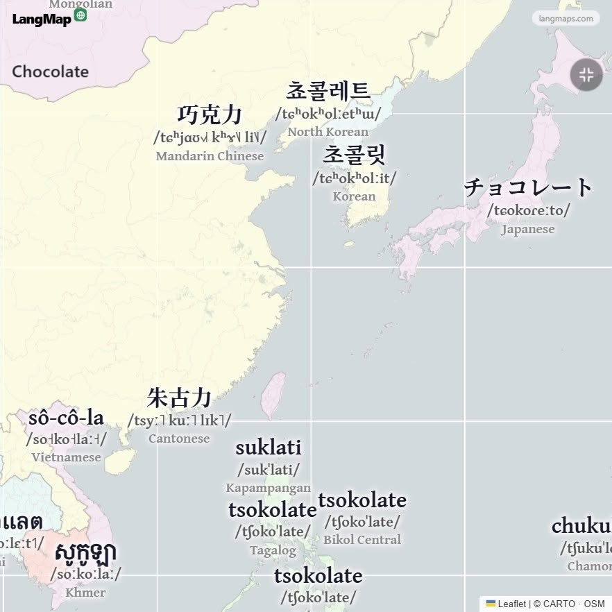

Sinosphere · · revised · Facebook post
Chocolate Left Mesoamerica with Its Name, and You Can Still Recognize It Almost Everywhere
- The word chocolate left Mesoamerica through Spanish and is recognizable almost everywhere.
- Chinese, which often translates foreign things by meaning, sounds this one out, twice.
- Korea ended up with two standard forms, and Vietnam took the word from French.

Contents
Almost one word
Chocolate left Mesoamerica with its name, and you can still recognize it almost everywhere.
From Spanish, the word spread through Europe and far beyond:
Spanish: chocolate
French: chocolat
German: Schokolade
Italian: cioccolato
Russian: шоколад (shokolad)
Hebrew: שוקולד (shokolad)
Hindi: चॉकलेट
They could almost be spelling variants of one word.
In the Philippines, a former Spanish colony, Tagalog says tsokolate, the Spanish word in Tagalog spelling.
Where did it come from?
Spanish chocolate is generally traced to Nahuatl, although the exact Nahuatl form behind it is still debated.
Every popular account gives the same source: xocolātl, from xococ "bitter" and ātl "water".
The trouble is that this form is not attested anywhere.
Dakin and Wichmann argued in 2000 that the source is chicolātl, built on chicolli, the stick the drink was beaten with. Early Nahuatl texts call the drink cacahuatl, "cacao water", and the word chocolate first appears in Spanish, in 1579.
So the word is clearly from Mexico. Exactly which word, nobody can yet say for sure.
The Sinosphere sounds it out
The Sinosphere is the detail worth noticing.
Chinese often translates foreign concepts by meaning. The tomato, for example, is 番茄 (fānqié), the "foreign eggplant".
But not this time.
Mandarin: 巧克力 (qiǎokèlì)
Cantonese: 朱古力 (zyu1 gu1 lik1)
Both reproduce the sound rather than the meaning. And they are two different spellings of one word: 巧克力 was first used in Shanghainese, 朱古力 in Cantonese. Read in Cantonese, 巧克力 comes out as haau2 hak1 lik6, a long way from chocolate.
Both reached Chinese through English.
Japanese has:
チョコレート (chokorēto)
commonly shortened to チョコ (choko).
Two Koreas, two chocolates
Korean adds another twist.
South Korea: 초콜릿 (chokollit)
North Korea: 쵸콜레트 (chyokolleteu)
The same foreign word ended up with different standard forms on the two sides of Korea.
Vietnam: through French
Vietnam took a different route again.
As part of French Indochina, Vietnam absorbed a large layer of French vocabulary. Chocolate came through French chocolat and became:
sô-cô-la
There does not seem to be an established Chữ Nôm spelling for sô-cô-la.
巧克力 can be read in Sino-Vietnamese as xảo khắc lực, but that is simply the Hán-Việt reading of the Chinese transcription, not the Vietnamese word for chocolate.
So within the old Chinese-character cultural sphere, the same word arrived through several different channels:
Mandarin: 巧克力
Cantonese: 朱古力
Japanese: チョコレート
South Korean: 초콜릿
North Korean: 쵸콜레트
Vietnamese: sô-cô-la
Finnish looks unusually short too: suklaa. It came through Swedish choklad, said with a sh, and was reshaped on its way into Finnish.
Not alone on the table
And chocolate is not alone.
Tomato comes from Nahuatl tomatl. Strictly, tomatl was the tomatillo; the tomato proper was xītomatl, which Mexican Spanish still keeps as jitomate.
Avocado comes through Spanish aguacate from Nahuatl āhuacatl.
Chocolate is also generally traced back to Nahuatl, though its exact early form remains disputed.
Three words from Mesoamerica that ended up on tables almost everywhere.
Chocolate kept its sound all the way around the world, even where it had to be spelled in characters.
Sources
- "Chocolate" and "History of chocolate", Wikipedia, accessed 2026
- Wiktionary, 巧克力 and 朱古力, accessed 2026